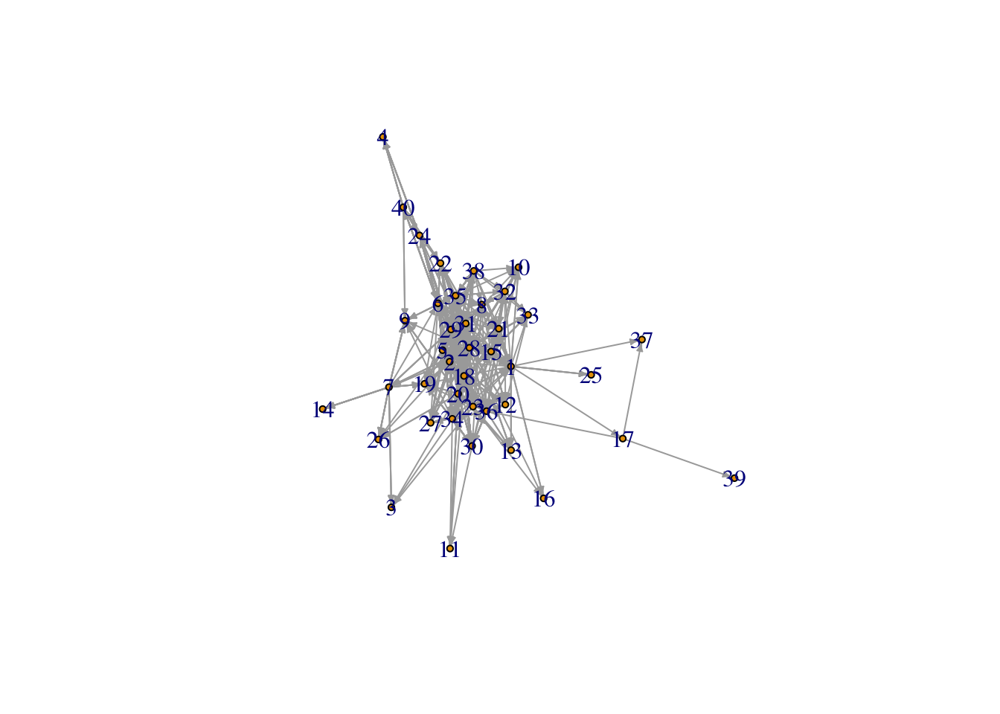

The first step that we followed was to prepare the data for the network analysis. To do that, we created a separate edge and node list, titled hw_nodelist and hw_edgelist.
Next, we generated a basic network visualization (see figure below), from which we are able to draw the following key insights:
The network visualization appears to resemble a scale-free network; unsurprisingly, some respondents do not know others in the network well, while others appear to know many others.
Respondent 39 appears to be the least connected to the rest of the network, as well as Respondents 14 and 25 who have one connection.

Additionally, we generated a Newman-Girvan graph, which sequentially removes high-betweeness edges to only leave behind the best partitioning of the network for the graph. This figure uses hierarchical clustering, and identifies 22 unique clusters.
We also created a figure built on community detection, based on propagating labels. This figure assigns node labels, randomizes, and then replaces each label with the label that is most frequent among its neighbors; this process halts after each vertex has the most common label of its neighbors. Briefly, the second plot shows each respondent encircled by a particular color; the type of color corresponds to the number of ties that the respondent has with other group members.
The density of the network is 0.44, which is the proportion of all present edges (i.e., connections) from all possible edges in the network. At a broad level, we can understand this value as indicating that not everyone who took the survey is connected.
The network has a reciprocity and a (global) transitivity of ~0.5, suggesting that about half of the time, a respondent in the network indicated being directly and indirectly tied to someone else, when the respondent on the other end did not agree. This may partially be the result of measurement error.
The longest geodesic distance, network diameter, is five and the average node degree using all degrees is 34.65.
## [1] 0.4442308## [1] 0.4992785## [1] 0.5005313## [1] 5## [1] 34.65Next, we assess the centrality functions of degree, closeness, the eigenvector, and betweenness.
For degree, which lists the number of ties, the centrality score is .735. If we examine centrality based on distance to others in the graph, closeness, we view that the centrality score is 0.434. In terms of the eigenvector, which is centrality proportional to the sum of connection centralities, the centrality score is 0.67 (values of the first eigenvector). Finally, for betweenness, the score is 0.12.
## $res
## [1] 9 36 6 10 38 41 1 24 14 10 6 18 12 5 12 4 1 46 28 23 20 29 10 7 3 8 16 43 37 18 32 13 13 28
## [35] 25 27 2 9 1 8
##
## $centralization
## [1] 0.7352564
##
## $theoretical_max
## [1] 1560## $res
## [1] 0.6964286 0.6290323 0.4482759 0.3362069 0.5342466 0.6500000 0.5064935 0.5909091 0.5270270 0.5342466
## [11] 0.4431818 0.4936709 0.4814815 0.3391304 0.5571429 0.4756098 0.4534884 0.6000000 0.5652174 0.6393443
## [21] 0.5735294 0.5200000 0.5909091 0.4875000 0.4148936 0.4482759 0.5000000 0.7358491 0.6190476 0.5064935
## [31] 0.6093750 0.5342466 0.4875000 0.6000000 0.6290323 0.6000000 0.4239130 0.5652174 0.3145161 0.4285714
##
## $centralization
## [1] 0.4335255
##
## $theoretical_max
## [1] 19.24675## $vector
## [1] 0.171564157 0.868913434 0.048436700 0.032365907 1.000000000 0.870212863 0.028849600 0.514868572
## [9] 0.151136996 0.157017774 0.118210711 0.414511768 0.201179387 0.005053097 0.260510658 0.048019707
## [17] 0.006009999 0.944528593 0.616755681 0.458261803 0.326607971 0.515186512 0.204110310 0.079422926
## [25] 0.018029996 0.101618061 0.458780359 0.823553811 0.580895651 0.421407616 0.832268800 0.202484729
## [33] 0.186974701 0.633775180 0.602725153 0.576281907 0.006220533 0.222188740 0.000210534 0.105363457
##
## $value
## [1] 28.54646
##
## $options
## $options$bmat
## [1] "I"
##
## $options$n
## [1] 40
##
## $options$which
## [1] "LR"
##
## $options$nev
## [1] 1
##
## $options$tol
## [1] 0
##
## $options$ncv
## [1] 0
##
## $options$ldv
## [1] 0
##
## $options$ishift
## [1] 1
##
## $options$maxiter
## [1] 1000
##
## $options$nb
## [1] 1
##
## $options$mode
## [1] 1
##
## $options$start
## [1] 1
##
## $options$sigma
## [1] 0
##
## $options$sigmai
## [1] 0
##
## $options$info
## [1] 0
##
## $options$iter
## [1] 1
##
## $options$nconv
## [1] 1
##
## $options$numop
## [1] 20
##
## $options$numopb
## [1] 0
##
## $options$numreo
## [1] 19
##
##
## $centralization
## [1] 0.6714227
##
## $theoretical_max
## [1] 39## $res
## [1] 84.0616886 28.5512815 0.0000000 0.0000000 13.1250010 91.5637434 22.3636950 0.0000000
## [9] 0.0000000 0.0000000 0.0000000 0.0000000 0.0000000 0.0000000 15.5350122 0.0000000
## [17] 20.0000000 68.0050823 0.0000000 55.4739079 0.0000000 0.0000000 11.2174072 18.5381747
## [25] 0.0000000 0.0000000 0.0000000 197.9156390 0.0000000 1.2811184 23.4809215 4.4627833
## [33] 0.2936508 28.2161521 22.9380115 48.1758511 0.0000000 6.1281513 0.0000000 12.6727273
##
## $centralization
## [1] 0.1235791
##
## $theoretical_max
## [1] 57798Finally, we assess similarity. The measure of degree similarity in the network is 0.06. It is fairly low.
## [1] 0.06026113Next, we determine which tie type produces the most similar and dissimilar networks in terms of the introversion characteristic.
More specifically, in terms of tie type, we first saw in the dataset hw_edgelist that there are five tie types consisting of 1, 2, 3, 4, and 5, The options for each tie were articulated as being the following:
I have texted in the last 7 days
I have met during my time in MBDS
Is my friend
I ask for advice/help
Asks me for help/advice
The first tie, which concerns having texted another person within the last seven days (0.124), is the characteristic that produces the most similar network in terms of introversion.
The third tie, is my friend (-0.031), as well as the second tie of having met someone in MBDS (-0.043), are the characteristics that produce the least similar network in terms of introversion.
Especially given that BDS-516 is a very diverse class, compared to other BDS courses, this is unsurprising to note. In terms of ties four and five, for asking and receiving requests for help (0.004 and 0.061, respectively), they are not disproportionately high in terms of determining how that might relate to similarity on the characteristic of introversion.
Overall, this makes sense given the online environment and that people across all personalities would be similar in terms of having “texting” ties (i.e., tie type 1 generates the most similar network in terms of introversion). People with different personalities would be less similar in terms of “friendship” ties (i.e., tie type 3 is most dissimilar).
## Tie Value
## 1 Tie 1 0.123572655
## 2 Tie 2 -0.031476549
## 3 Tie 3 -0.031476549
## 4 Tie 4 -0.043112020
## 5 Tie 5 0.003559696As stated, there are three options for introversion per our dataset: 1. Introverted, 2. Middle ground, and 3. Extroverted. We have assigned colors based on people’s responses to the introversion question as blue, red, and yellow respectively. Blank circles represent NA entries, of which there are many.
While we observe that many individuals did not to answer this question, we note that extroverts and middle ground individuals are closer to the enter of the network.
Indeed, introverts are more on the periphery, relative to the group of extroverts, but it is important to note the small sample size of both introverted and extroverted individuals compared to middle ground individuals and those who responded with NA.
Perhaps, those who chose not to answer - those on the periphery of the network - are more likely to be introverted.